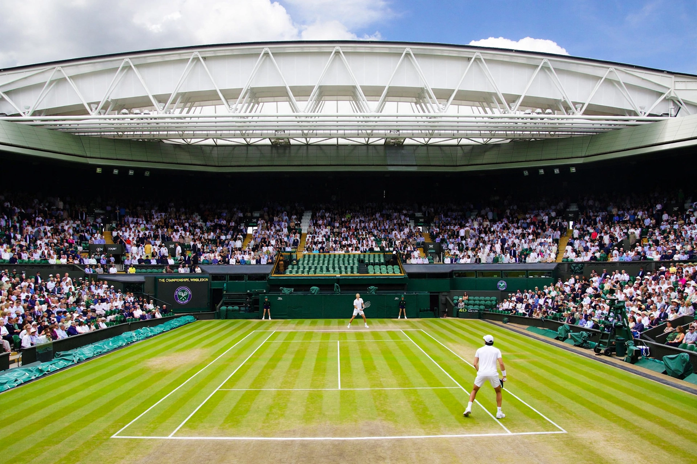

Wimbledon

Wimbledon is a district and town of southwest London, England, in the London Borough of Merton, about 11 km (7 miles) southwest of the city centre. It is best known worldwide as the home of the Wimbledon Championships, the oldest tennis tournament in the world.
The Championships
The Championships, Wimbledon — commonly simply Wimbledon — have been held at the All England Club since 1877 and are played on outdoor grass courts over two weeks in late June and early July. The tournament is one of the four Grand Slam events, characterised by its strict dress code of predominantly white clothing for players, the absence of sponsor advertising around the courts, and traditions such as strawberries and cream. Centre Court (capacity about 15,000) received a retractable roof in 2009, and No. 1 Court in 2019. Roger Federer holds the record for men's singles titles with eight; Martina Navratilova won the women's singles nine times.
The area
Wimbledon is divided between the "town" around the station and the "village" near the common. Wimbledon Common, one of London's largest areas of common land, is known for its windmill and as the setting associated with the Wombles. The district is served by the District line of the London Underground and National Rail services to Waterloo, and is popular with families for its schools and green space.
See also: London.